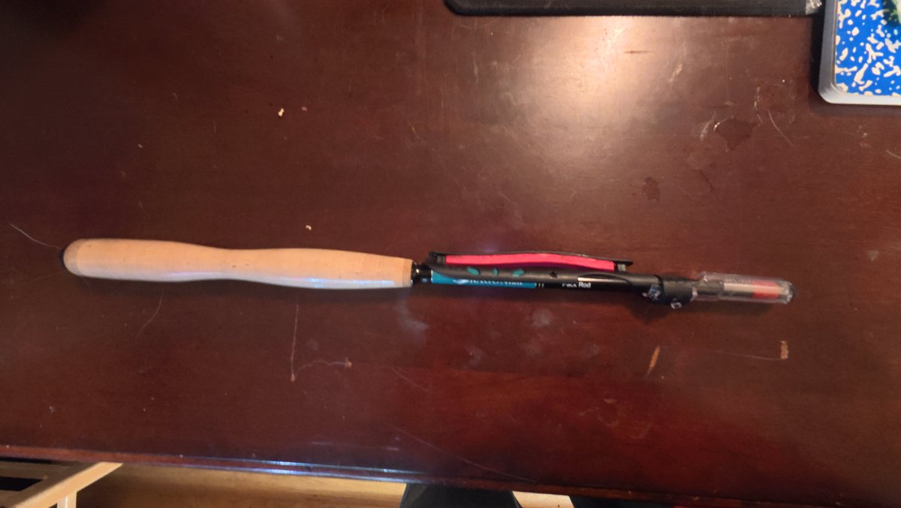
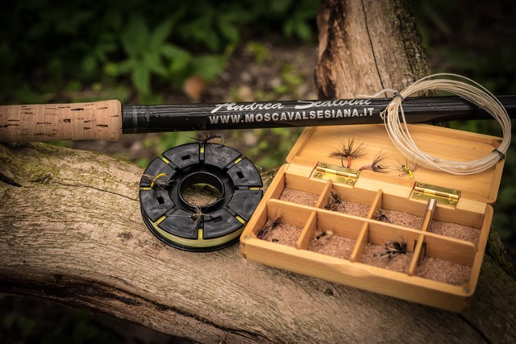
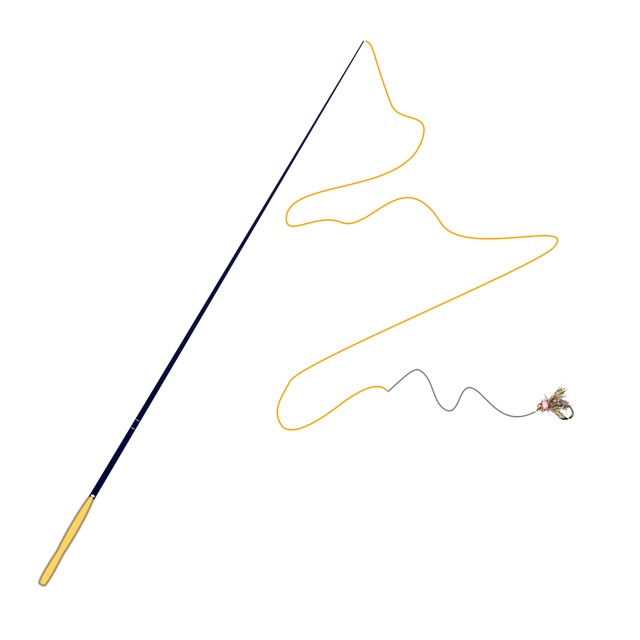
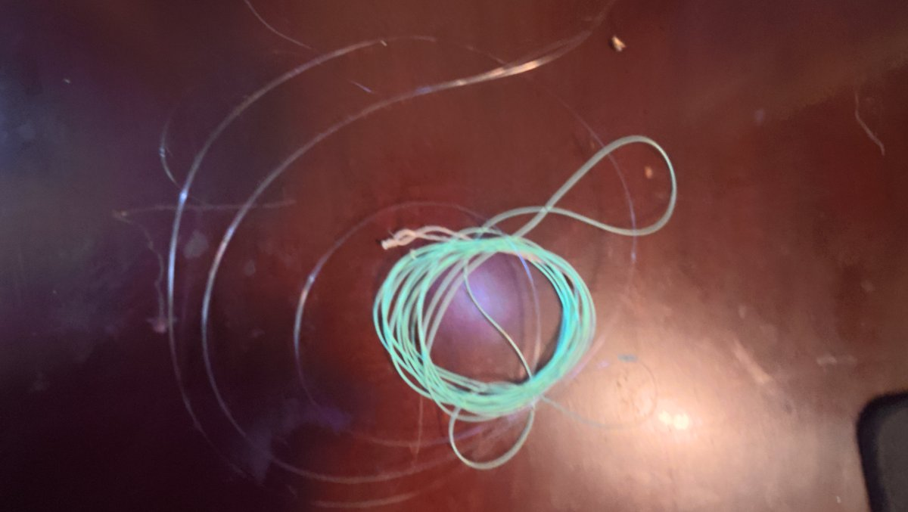
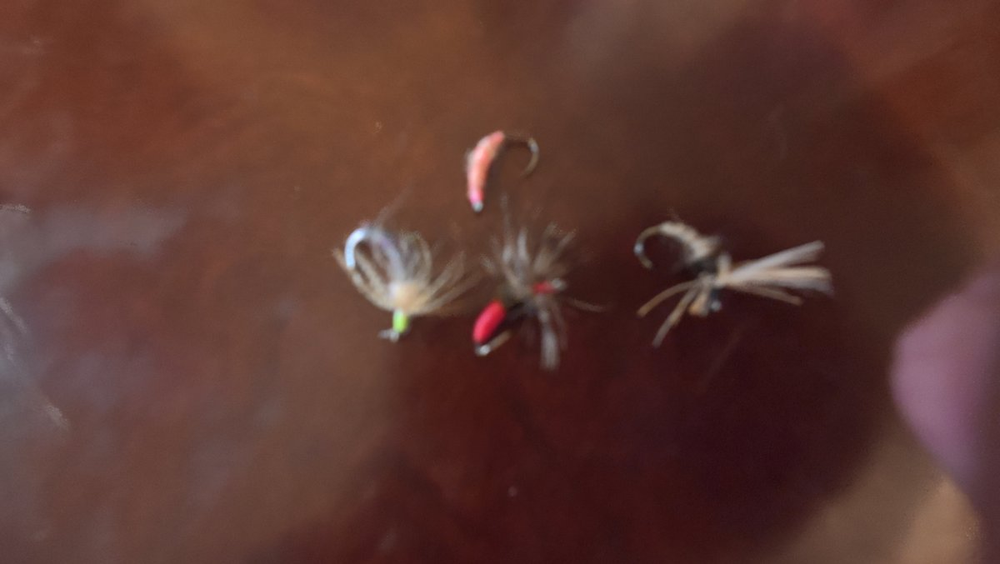
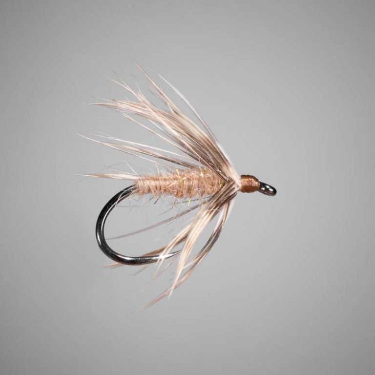

The rod
My Kaida packs down for carrying between spots. It's the rod I use for my own fishing.
Putting it together
Four pieces make the fishing setup: a rod, main line, tippet, and kebari. Here's how they fit together.
Without a reel, the setup stays pretty simple. The main line attaches to the rod tip, the tippet connects to the line, and the fly ties onto the tippet.
A line holder and a small fly box help keep everything organized between fishing spots.
For a closer look at the individual pieces, visit Gear.


Follow the connection
This diagram shows the order of the parts. The attachment method depends on your rod and line, so follow their instructions when putting them together.
A closer look
I use a Dragontail Kaida pack rod with either PVC-coated or furled line. Both cast well for me, including when there's some wind.

My Kaida packs down for carrying between spots. It's the rod I use for my own fishing.

PVC-coated and furled lines are my choices. I like how they cast and handle.

A small selection gives you a few patterns to try without carrying a lot of equipment.
At the end of the line
Kebari is a Japanese term for an artificial fishing fly. The feather fibers around the hook are called hackle. Their shape and movement help give the fly life in the water.

Kebari come in different shapes. Some have forward-facing hackle, while others use different feather arrangements. There's more variety than a single standard tenkara fly.
The Gear page covers the four parts of the fishing setup, plus a landing net and wading staff.
Explore the six pieces